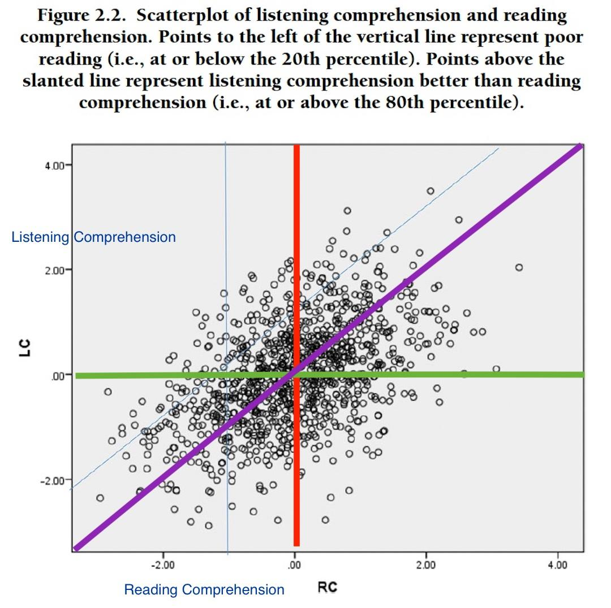

Watch the video to see online practice of letter blending techniques for early readers.
Ch 1: My Reflection on Guided Reading
The three stages of guided reading demonstrate efficient ways to organize reading courses. Before reading, asking students to look at pictures and discuss the topic prompted them to consider what they already knew. During reading, guiding struggling kids with hints and relating new words to familiar songs kept them engaged. After reading, word-finding activities and syllable clapping helped students learn phonics and vocabulary.
Guided reading lesson. (n.d.). [Video]. YouTube. https://youtu.be/HFRcwN2x6Gs
Guided reading strategies. (n.d.). [Video]. YouTube. https://youtu.be/HZdIHuNtIbc
Guided reading classroom example. (n.d.). [Video]. YouTube. https://youtu.be/hTXQPIYLzoo
Ch 1: Why These Are Good Methods for Teaching Beginning Reading
Asking young children to decode words is not enough to help them learn to read. Clear, organized, and inspiring connections between spoken language, written text, and meaning should be facilitated by effective instruction. Because they assist early decoding and are consistent with the concepts of systematic, explicit, and direct education, the Language Experience Approach (LEA), bimodal reading, and teaching reading through singing are effective tactics.
The LEA is effective for beginning readers because it fosters reading from the child's own language and experiences. Instead of introducing students to completely unfamiliar texts, the teacher first invites them to discuss an idea or experience, and then writes their sentences. The reading material is these sentences. Students find decoding less intimidating when they read material written in their own words since they already understand the language. The strength of LEA is that it naturally connects speaking, reading, and writing. At the same time, teachers can also directly teach phonics patterns, word identification, and fluency through repeated reading of the created text.
By fusing reading and listening, Bimodal reading also promotes the development of early reading skills. With this method, students engage with a text while listening to it read aloud. Students are better able to recognize pronunciation, rhythm, and word boundaries when they listen before, during, or after reading. Because they have to interpret unknown words without hearing how they sound, many language learners find reading to be slow and frustrating. Students can make the connection between spoken and written language by listening to the text, which makes it easier for them to identify words and comprehend the passage's content. However, some learners may depend too much on the audio instead of attempting to decode words themselves, and access to technology can also be a challenge. Teachers need to guide students carefully so that listening supports, rather than replaces, decoding practice.
Another way to increase the accessibility of early reading is to teach it through singing. Songs help students retain words and sounds more readily, as they introduce elements of rhythm, repetition, and linguistic patterns. The teacher may focus the students' attention on certain words, letter groups, or phonics skills as they read the lyrics of the song. Singing is also beneficial for the students as it increases their motivation and alleviates their stress. They may readily recall the words, which makes the reading process less stressful.
My perspective on these strategies has been greatly impacted by my personal teaching experience. I observed that when I taught Bangla in an English-medium school, the students spoke Bangla, but reading and writing Bangla were challenges for them. I realized that traditional reading approaches were too daunting, and so I began using approaches similar to those described here. For example, I first read stories aloud while students listened, and then some students performed the characters while reading parts of the story. This helped them make the connection between spoken language and printed words. I also used songs when teaching letters and vocabulary, and students began remembering words more easily because they associated them with music and rhythm. However, my experience also showed that the best strategies did not work for all students. Some children were still unable to read fluently, and I decided to provide extra support for them individually. This experience reminded me that systematic and explicit instruction also includes differentiation and patience.
Overall, these methods are effective because they incorporate social interaction with educational instruction. Singing increases motivation, memory work, and phonics learning; bimodal reading enhances the student's understanding of the relationship between the written and the spoken word; and LEA makes reading personally relevant through the use of the student's own language. When these methods are used within a model of explicit, systematic, and direct instruction, it is possible to help beginning readers develop decoding skills with confidence.
Ch 1: Extended Response on Guided Reading
Before reading, during reading, and after reading are the three stages of guided reading, and the videos demonstrate a number of efficient ways to organize reading courses.
Before reading, the teacher instructed the students to look at and discuss pictures and illustrations, as well as ask questions about the topic. This method worked because it prompted students to consider what they already knew and made them desire to read the book. The teacher also taught the children important vocabulary and advised them to apply strategies such as rereading sentences and considering what makes sense with the image or sound.
During reading, the teacher guided kids who were struggling with certain words by providing hints, relating new words to a song they already knew, and assigning different students to read aloud. These methods were effective because they encouraged students in decoding while also allowing them to actively participate in the reading process.
After reading, the teacher helped the students learn more by having them play word-finding activities, build words with letters, write words, and clap syllables. These activities helped students learn more about phonics and vocabulary while keeping them engaged with the reading.
In general, the session demonstrated that guided reading may be quite effective when teachers combine comprehension, decoding practice, and hands-on activities.
Guided reading lesson. (n.d.). [Video]. YouTube. https://youtu.be/HFRcwN2x6Gs
Guided reading strategies. (n.d.). [Video]. YouTube. https://youtu.be/HZdIHuNtIbc
Guided reading classroom example. (n.d.). [Video]. YouTube. https://youtu.be/hTXQPIYLzoo
Teaching reading strategies. (n.d.). [Video]. YouTube. https://youtu.be/_9HtKCxUxhs
Phonics and guided reading activities. (n.d.). [Video]. YouTube. https://youtu.be/A_gcgA-YaTw
Ch 2: Response on Reading Comprehension
Keene and Zimmermann's article highlights that true reading needs thinking techniques rather than just word decoding. Skilled readers use strategies like asking questions, making guesses, and relating text to prior knowledge. Most kids are good at decoding but poor at comprehension.
I focused on a child in the scatterplot who was above the slanted line (high listening comprehension) but to the left of the vertical line (limited reading comprehension). This student has reading difficulties on their own, but they can comprehend language when they hear it. This demonstrates that access to the text is the problem rather than intelligence or intellectual ability.
Based on my experience, both learner types benefit from reading aloud with expression. Expressive reading facilitates the connection between spoken language and written text for kids with good listening comprehension but poor reading abilities. Listening to expressive reading also demonstrates how meaning is created for students who are able to decode but need deeper comprehension.
When I make my classroom interactive with discussion, fun read-alouds, and student participation, even inattentive students start to focus and engage. This shows that making the classroom a fun and interactive place really helps students understand and pay attention.

Keene, E. O., & Zimmermann, S. (2013). Years later, comprehension strategies are still at work. The Reading Teacher, 66(8), 601–606.
Ch 3: Vocabulary Reading Response
Blachowicz and Fisher (2011) explain that the best way to help students learn words is to provide a word-rich environment with opportunities to use words meaningfully. Students learn better from repeated exposure, wordplay, discussion, and reading — not just definitions. A key concept is that students need to not only know what words mean but also apply them in conversations, writing, and class discussions.
I found the read-aloud activities quite interesting — children naturally learn many new words when stories are read to them by teachers or parents. Discussion and interaction are also very important for vocabulary development because students learn more when they interact with others rather than just hear.
Another significant takeaway is the role of motivation in vocabulary acquisition. Using word games, word walls, puzzles, and discussions makes students interested in learning new vocabulary in a fun way. Students also retain words better if they can be related to real-life experiences. Repeated reading, classroom discussion, and using words in new contexts help students remember vocabulary long-term — unlike words learnt only for exams.
In our class discussion, we talked about how students can practice vocabulary in schools with limited resources. Teachers can help parents develop reading routines at home, particularly before bedtime. Parents should encourage children to read storybooks or listen to stories daily, as frequent reading enables students to acquire and retain new words naturally. Children in elementary school should be reading every day as early as possible to increase their vocabulary. For middle and high school levels, motivation is crucial — teachers can use real-life illustrations and show the impact of poor vocabulary on academic and career success. A practical idea for low-resource schools is to have small vocabulary goals per class: one teacher creates a class word list used across subjects, and students practice those words in everyday conversations.
Blachowicz, C. L., & Fisher, P. J. (2011). Best practices in vocabulary instruction revisited. Best practices in literacy instruction, 4, 224–249.
Ch 4: Response to Workshop Videos
The videos highlighted that education is not just imparting knowledge but understanding students' emotions and experiences. Technology can enhance learning but also create inequality — a critical concern in developing countries where urban and rural students have very different experiences.
Most importantly, emotional support and motivation are key to learning. Students labelled as "weak" may simply lack support, confidence, or opportunity. As educators, we should focus on creating supportive environments rather than labelling difficulties.
The concept that resonated with me was the importance of emotional support and motivation to learning. The videos indicated that perhaps it is a lack of support, confidence, and opportunity that makes students appear "weak" or "less capable." This altered my perspective on students' achievement. As professionals, we should pay more attention to our capacity as environments to support rather than focusing on issues of "difficulty."
Understanding the role of education. (n.d.). [Video]. YouTube. https://youtu.be/2zdMsQL6WW4
Communication in learning. (n.d.). [Video]. YouTube. https://youtu.be/DkzmT5da14M
Reflective practice in education. (n.d.). [Video]. YouTube. https://youtu.be/-PLB58ePPbs
Ch 5: Response on Critical Literacy
McLaughlin and DeVoogd (2020) discuss critical expressionism — expanding reader response through creative responses like art, dramatization, and digital projects. Critical literacy pushes readers beyond the text to consider power relations, attitudes, and unseen prejudices.
Analysis of The Tortoise and the Hare:
- Concealed values: Dedication, humility, and hard work over natural talent
- Missing perspectives: Other animals' viewpoints; the rabbit's background
- Action for justice: Apply lessons to real-life situations where people are underestimated
anyflip.com/xhvmn/jgda/basic — Read “The Tortoise and the Hare”
McLaughlin, M., & DeVoogd, G. (2020). Critical expressionism: Expanding reader response in critical literacy. The Reading Teacher, 73(5), 587–595.
Ch 5: Critical Analysis: Encanto (2021)
The movie shows a distinct lean towards perfection and productivity — strong powers are more appreciated, reflecting a societal ideology that worth equals productivity. Mirabel is left out for lacking powers, and Bruno is isolated for his misunderstood ability.
Alternative perspective: Each person is valuable regardless of capabilities. Mirabel brings emotional insight and healing. The movie urges acceptance of diversity in talents, personality, and feelings.
Action To Promote Justice and Peace:
- Encourage acceptance and inclusion by appreciating persons as they are, not as they can perform
- Promote family and community communication to learn about hidden struggles
- Reduce unrealistic expectations and concentrate on mental wellness
- Promote the understanding of differences in ability, personality, and identity
- Show empathy and encourage inclusion and understanding in others
Bush, J. (Director). (2021). Encanto [Film]. Walt Disney Pictures.
Ch 6: Reading Response on Dyslexia
After completing modules on dyslexia, the reading brain, and screening & assessment, I developed a much deeper understanding. One key insight: the human brain is not built for reading — we learn by collaborating different brain parts, and when certain parts don't function the same way, dyslexia can result. But the brain is flexible — with the right instruction, it can adapt.
My main concern is that in South Asia, children are often labelled as "slow" or "untalented" instead of being properly assessed. I believe it is my responsibility to educate my community so that children are not harmed or misunderstood.
UC|CSU Collaborative for Neuroscience, Diversity, and Learning. (n.d.). Literacy & dyslexia.
Ch 7: Response on SEL & Healing-Centered Engagement
The term Social and Emotional Learning refers to a process whereby an individual acquires skills in social competence, emotional control, and self-awareness in order to facilitate positive interaction with other people. The five most significant elements of SEL are: self-awareness, self-management, social awareness, relationship skills, and responsible decision-making.
Through the readings, I gained important insights connected to SEL. The HCE framework formulated by Shawn Ginwright aims at giving students assistance regarding their academic, emotional, and psychological needs. Instead of saying "What is wrong with you?" to the students, it starts with asking what is good about the learners. Students often go through challenging experiences — family troubles, economic challenges, emotional issues — which may hinder them from concentrating, remembering, or interacting positively with others.
The HCE framework emphasizes the learners' identity, culture, stability, and possibilities. The PCRR strategy — Protecting (ensuring a safe space), Connecting (building empathic relationships), Respecting (valuing students' opinions), and Redirecting (motivating learners) — is part and parcel of the HCE process. Ginwright supports healing-centered engagement with four principles: asset-based, cultural, political, and adult flourishing.
I believe that if an educational institution doesn't know how to support trauma, the teacher-student relationship becomes non-friendly. In Bangladesh, mental health is often neglected or treated as non-existent. Still, many elders don't want to recognize this crucial issue — they treat mental health and trauma as non-existent. But there is a lot of evidence where trauma has destroyed people from childhood, and some carry it to the last day of their lives. Children are sensitive, emotional, and innocent. They should grow up with an enjoyable childhood, but trauma can make a child mentally and physically weak.
As second parents or guardians, educators can make a great difference. Children spend valuable time in schools where they build their minds. The teacher-student relationship plays a vital role in creating a safe space where children can grow emotionally and academically.
Ginwright, S. (2018). The future of healing: Shifting from trauma informed care to healing centered engagement. Occasional Paper, 25(1), 25–32.
Overall Course Reflection
Throughout this course, I have learned that literacy is not simply about decoding words — it is about making meaning, questioning perspectives, and empowering learners. The journey from early literacy methods like LEA and Guided Reading to more advanced concepts like Critical Literacy and AI in education has given me a comprehensive toolkit for my teaching practice.
One of the most important shifts in my thinking has been understanding the difference between decoding and comprehension. Many students can read words fluently but struggle to understand what they read. This has made me more intentional about teaching comprehension strategies explicitly.
Critical literacy has been particularly eye-opening. Learning to question texts — asking whose voice is missing, what values are being promoted, and how power operates in stories — has transformed how I approach reading with my students. I now see that literacy can be a tool for social justice and equity.
I also gained deep insights into dyslexia and special needs education. Understanding that dyslexia is neurobiological, not a reflection of intelligence, has changed how I view struggling readers. I am now better equipped to identify signs of dyslexia and provide appropriate support.
The conflict resolution and SEL components of the course have been equally valuable. I now recognize that students' emotional well-being is inseparable from their academic success. The Healing-Centered Engagement framework has given me a new lens for understanding and supporting students who have experienced trauma.
Finally, exploring AI in education has opened my eyes to both possibilities and responsibilities. As educators, we must harness technology thoughtfully while ensuring equity and critical awareness.
As I move forward in my career, I carry these lessons with me. My goal is to create classrooms where every child feels seen, supported, and empowered to become a confident reader and critical thinker. I am especially committed to bringing awareness about dyslexia and inclusive education to South Asian contexts, where these issues are still often misunderstood.